Books beginning
t
80 books
-
 ከርሞ ልጅነት
The Echoes of Childhood
Yitbarek Mengistu · 2026
ከርሞ ልጅነት
The Echoes of Childhood
Yitbarek Mengistu · 2026
-
 ክቡር ድንጋይ
The Lost Spell
Yismake Worku, Bethlehem Attfield · 2022
ክቡር ድንጋይ
The Lost Spell
Yismake Worku, Bethlehem Attfield · 2022
-
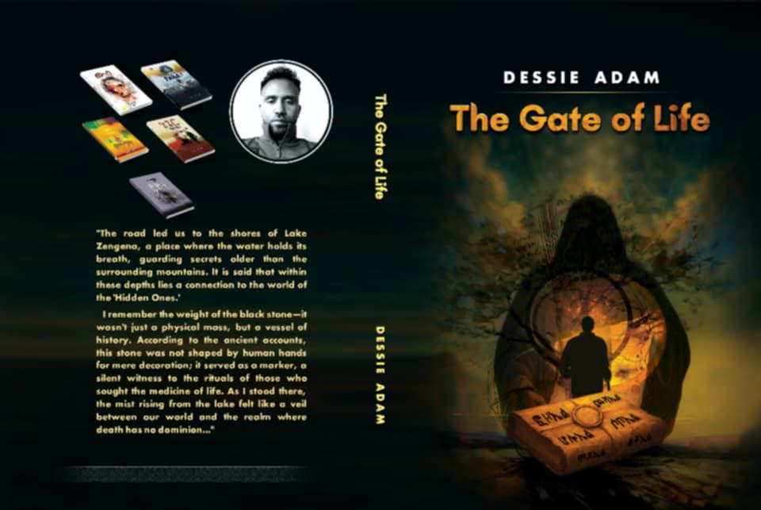
የሕይወት ደጅ The Gate of Life Dessie Adam · 2026 -
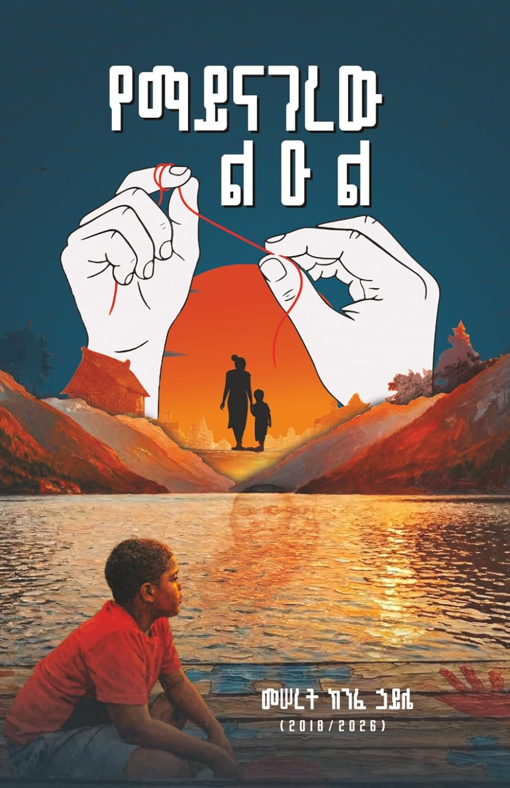
የማይናገረው ልዑል The Silent Prince Meseret Kinfe Haile · 2026 -
ጉዞ ወደ እግዚአብሄር (ጉዞ ወደ እግዚአብሄር ( The spritual means) ዲያቆን ግርማ ባቱ
-
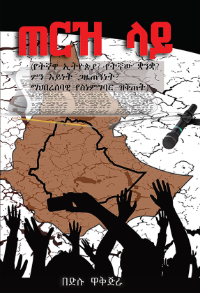
ጠርዝ ላይ terez lay ዶክተር በድሉ ዋቅጅራ · 2011 -
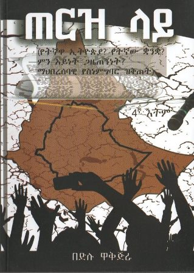
ጠርዝ ላይ terez lay በድሉ ዋቅጅራ -
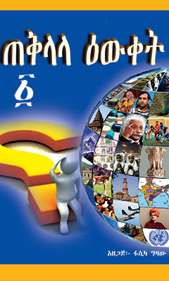
ጠቅላላ ዕውቀት teqlala ewqet ዩኒቲ መፅሐፍ መደብር ፋሲካ · 2004 -
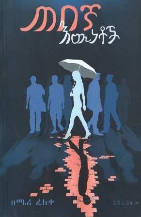
ጠበኛ እውነቶች tebenya ewnetoch ሜሪ ፈለቀ -
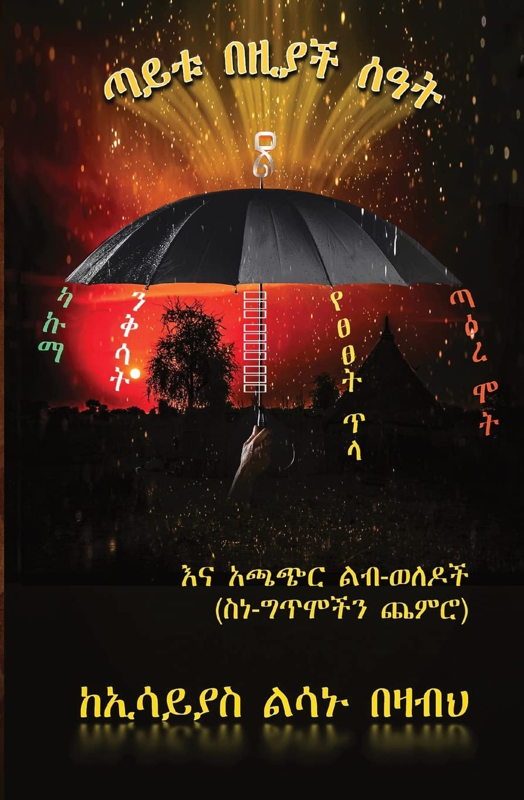
ጣይቱ በዚያች ሰዓት Taytu Bezach Sat Essayias Lesanu Bezabeh · 2022 -
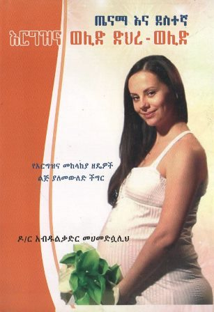
ጤናማ እና ደስተኛ እርግዝና ወሊድ ድህረ-ወሊድ tenama ena destenya eregezna welid dehre-welid አብዱልቃድር መሀመድ ሷሊህ -
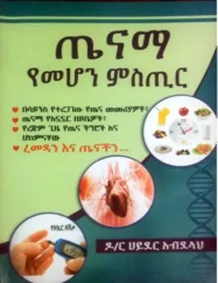
ጤናማ የመሆን ሚስጥር tenama yemehon miseter ዶ/ር ሀይደር አብደላ · 2018 -
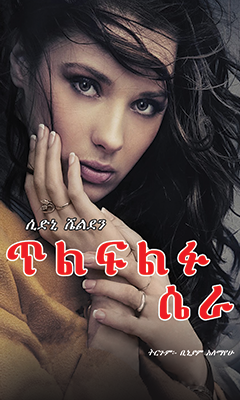
ጥልፍልፉ ሴራ telefelfu sera ዩኒቲ መፅሐፍ መደብር ፋሲካ · 2016 -
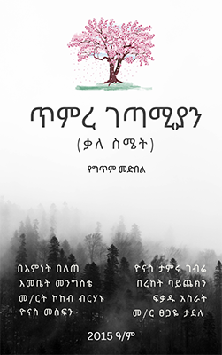
ጥምረ ገጣሚያን temre getamiyan ዮናስ መስፍን, እመቤት መንግስቴ, በረከት ባይጨክን, ፍቃዱ አስራት, መ/ርት ኮከብ ብርሃኑ, መ/ር ፀጋዬ ታደለ, ዮናስ ታምሩ ገብሬ, በእምነት በለጠ · 2015 -
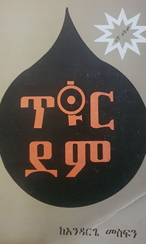
ጥቁር ደም tequr dem መቶ አለቃ አንዳርጌ መስፍን · 2008 -
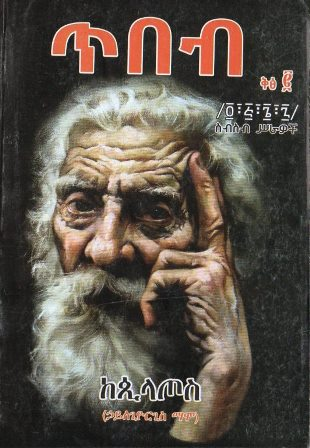
ጥበብ ከጲላጦስ ቅፅ ፪ tebeb kepilatos qets 2 ኃይለጊዮርጊስ ማሞ -
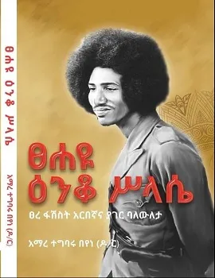
ፀሐዩ ዕንቆ ስላሴ tseheyu enqo selase ዶ/ር አማረ ተግባሩ በየነ · 2014 -
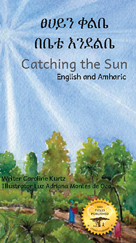
ፀሀይን ቀልቤ በቤቴ እንደልቤ tseheyen qelbe bebete endelbe Ready Set Go Books -
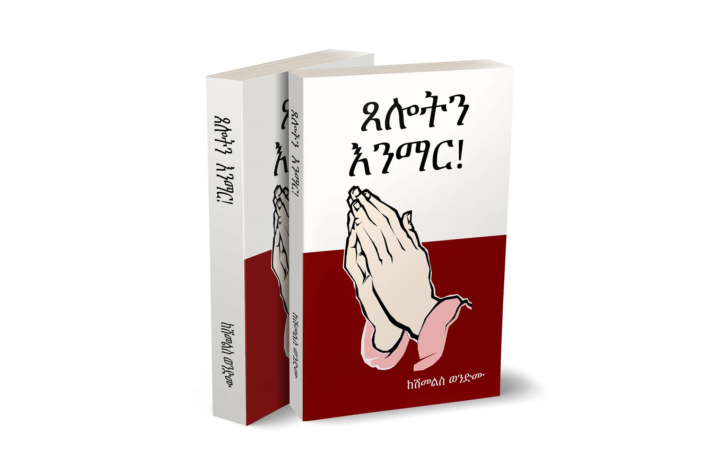
ጸሎትን እንማር Tseloten Enemar Dr Shimelis Wondimu · 2025 -
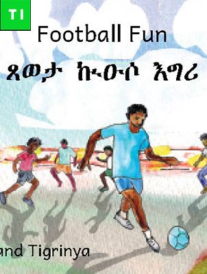
ጸወታ ኲዑሶ እግሪ tseweta kwiuso egri Ready Set Go Books -
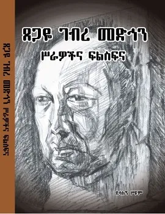
ጸጋዬ ገብረ መድህን ሥራዎችና ፍልስፍና tsegaye gebre medehen serawochna felesefna ደሳለኝ ስዩም · 2013 -
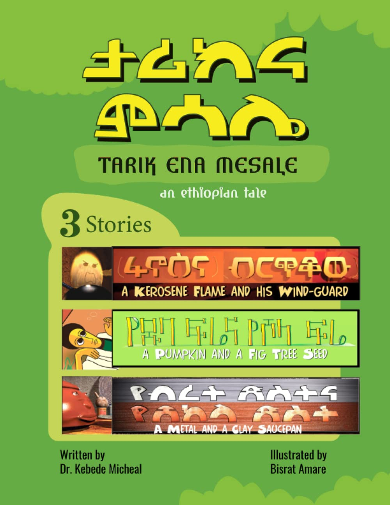
Tarik Ena Mesale An Ethiopian Tale Dr. Kebede Michael · 2020 -
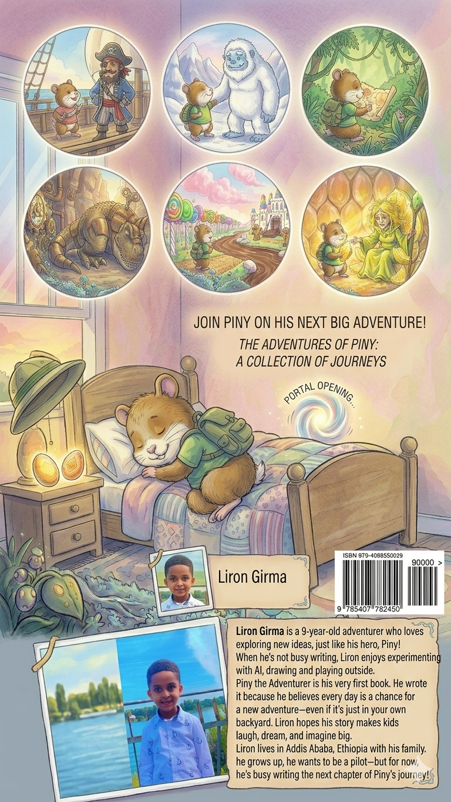
The Adventure of Piny Liron Michael · 2026 -
The Afersata: An Ethiopian NovelThe Afersata: An Ethiopian Novel Sahle Sellassie · 1968
-
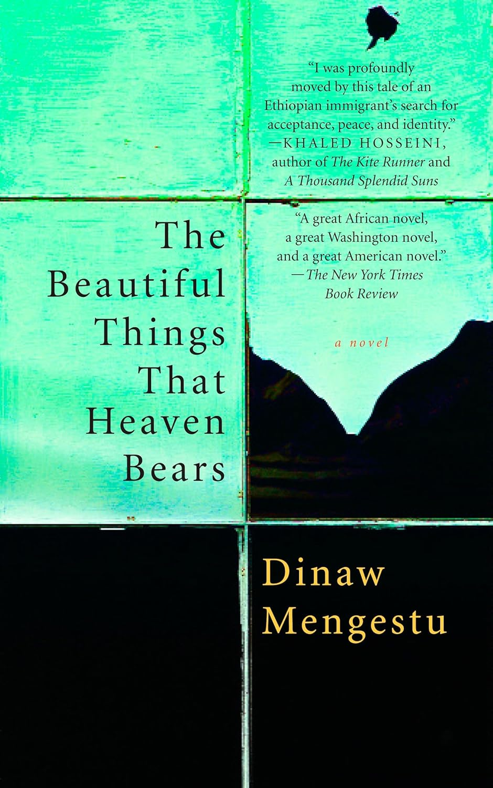
The Beautiful Things That Heaven Bears Dinaw Mengestu -
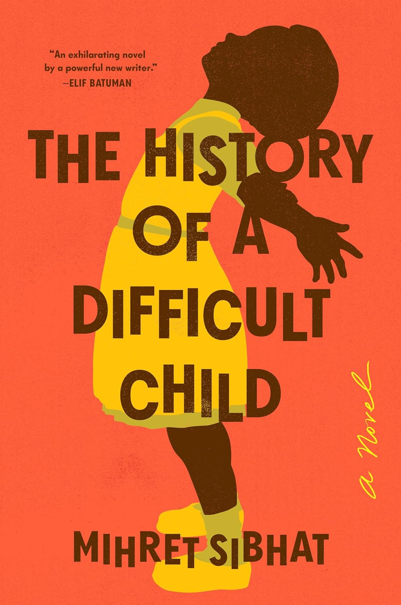
The History of a Difficult Child Mihret Sibhat · 2023 - The Magical Voyage to Harar EthioQuest Adventures · 2024
- The Parking Lot Attendant Nafkote Tamirat · 2018
-
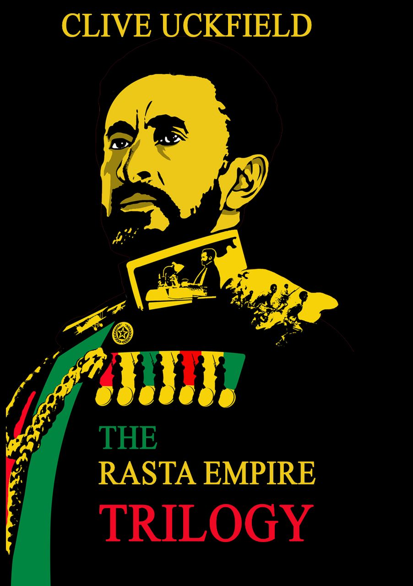
The Rasta Empire Trilogy Clive Uckfield · 2021 -
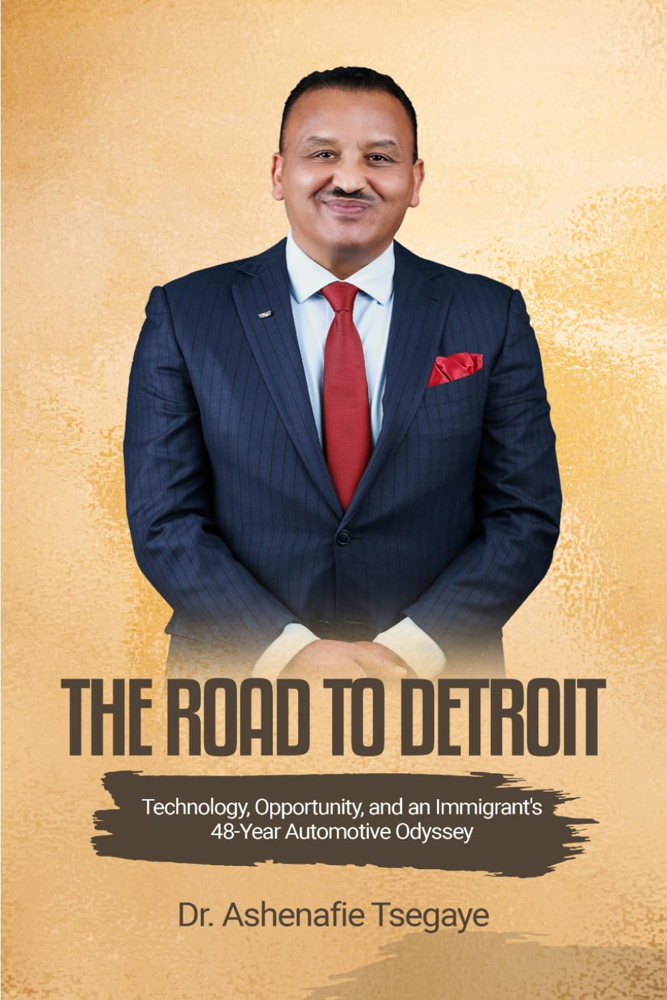
The Road to Detroit Dr. Ashenafie Tsegaye · 2026 - The Shadow King Maaza Mengiste · 2020
-
The Thirteenth SunThe Thirteenth Sun Dagnachew Worku · 1973
- The Village of the Spirits ታደሰ ፀጋ · 2022
-
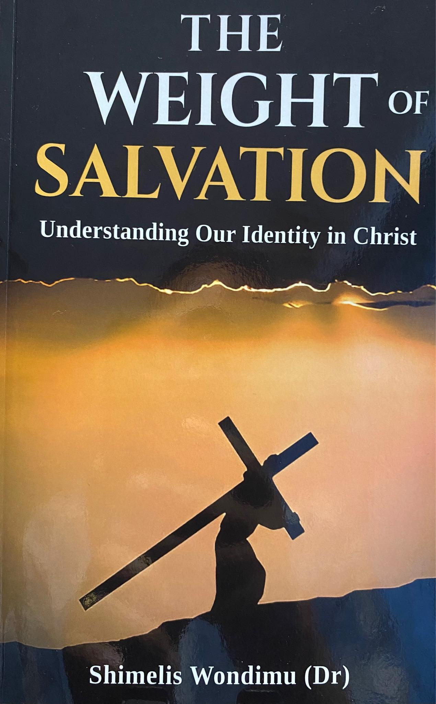
The Weight of Salvation Dr Shimelis Wondimu · 2025 -
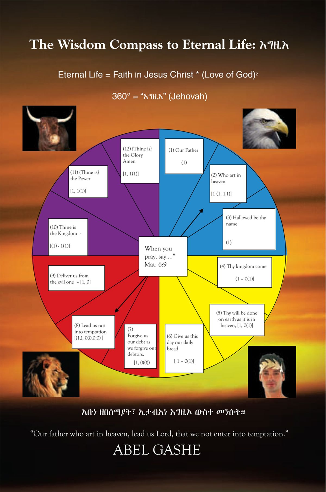
The Wisdom Compass to Eternal Life Abel Gashe · 2011 -
 The World Needs a Uniquely Happy You - Addis Books
The World Needs a Uniquely Happy You - Addis Books
-
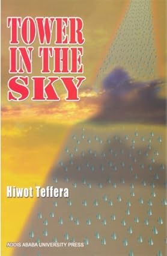
Tower in the Sky Hiwot Teffera · 2012 -
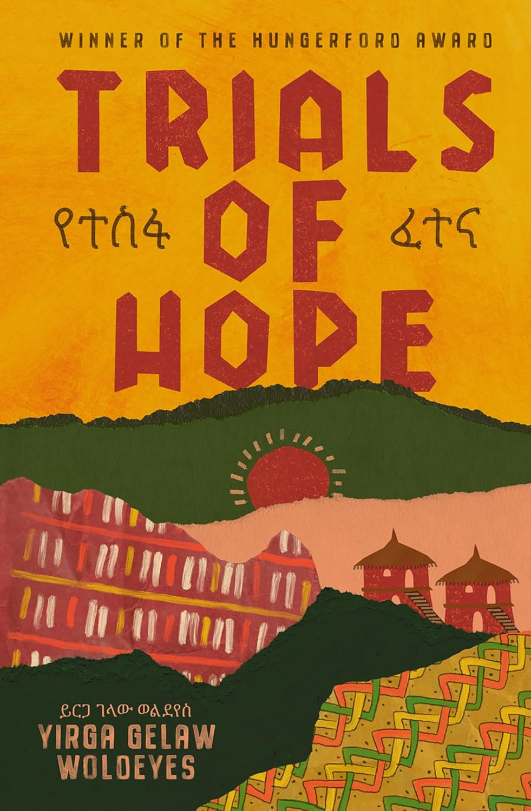
Trials of Hope Dr. Yirga Gelaw Woldeyes · 2026 -
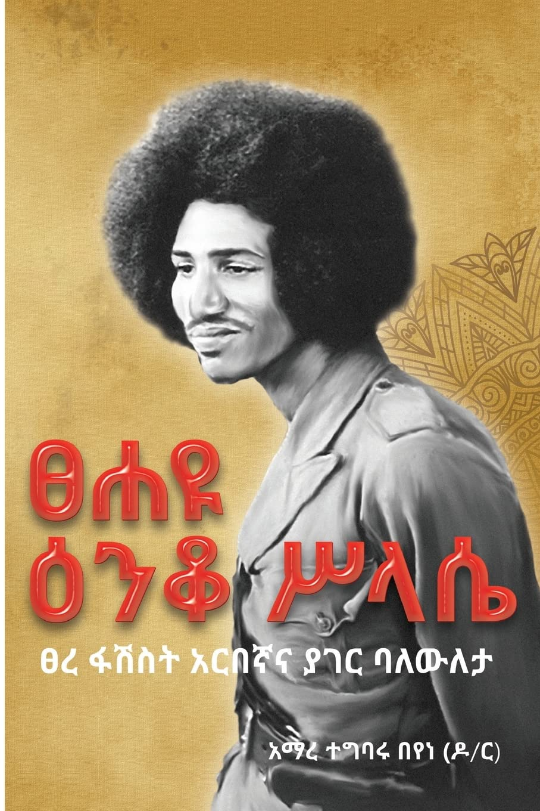
Tsehayu Enquo Selassie Dr. Amare Tegbaru · 2021 -
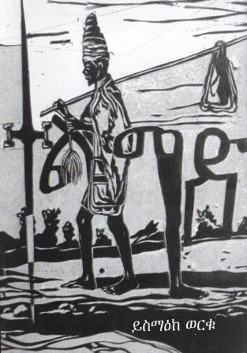
ተልሚድ telmid ይስማዕከ ወርቁ -
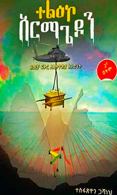
ተልዕኮ አርማጌዶን teleko armagedon ተስፋ ጋሻነህ · 2013 -
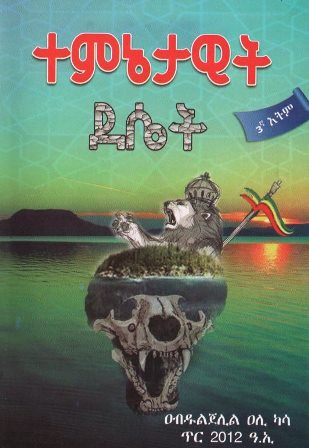
ተምኔታዊት ደሴት temnetawit deset አብዱልጀሊል አሊ ካሳ -
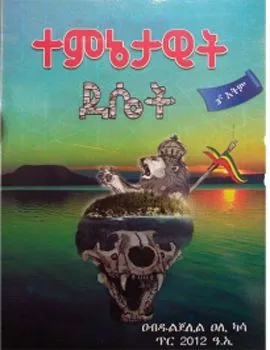
ተምኔታዊ ደሴት temnetawi deset አብዱልጀሊል አሊ ካሳ · 2017 -
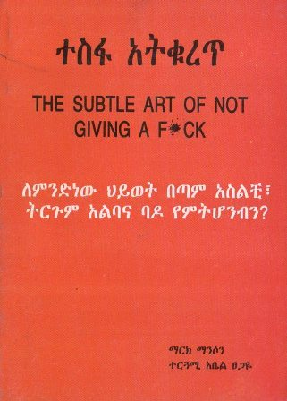
ተስፋ አትቁረጥ tesfa atquret አቤል ፀጋዬ -
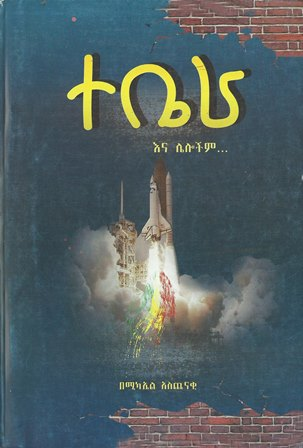
ተቤራ እና ሌሎችም tebera ena lelochem ሚካኤል አስጨናቂ -
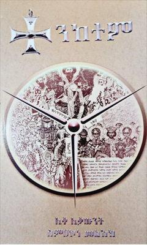
ተንከተም tenketem ስምዐኮነ መልአክ (ሊቀ ሊቃውንት) · 2014 -
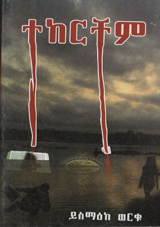
ተከርቸም tekerchem ይስማዕከ ወርቁ -
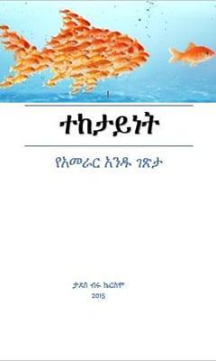
ተከታይነት teketaynet ዶ/ር ታደሰ ብሩ ኬርስሞ · 2015 -
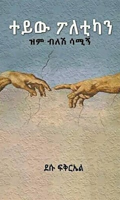
ተይው ፖለቲካን teyew poletikan ደሱ ፍቅርኤል · 2015 -
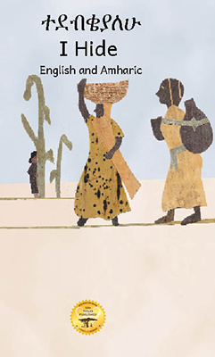
ተደብቄያለሁ tedebqeyalehu Ready Set Go Books -
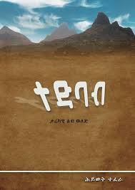
ተድባብ Tedbab Hiwot Teffera · 2024 -
ተግባራዊ ክርስትናተግባራዊ ክርስትና tegbarawi keresetna ዲያቆን ሄኖክ ሀይሉ
-
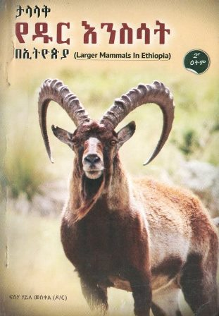
ታላላቅ የዱር እንስሳት በኢትዮጵያ talalaq yedur enessat beityopya ፍስሃ ሃይለ መስቀል - ታላቁ ኃይል talaqu hayel ብርሃኑ በላቸው
-
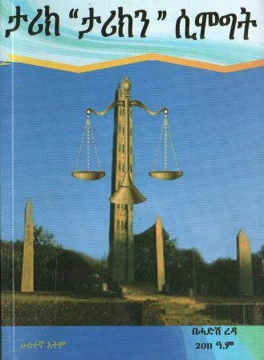
ታሪክ “ታሪክን” ሲሞግት tarik “tariken” simoget ሓድሽ ረዳ -
ታሪክና ምሳሌታሪክና ምሳሌ Tarikina Missale ከበደ ሚካኤል · 1954
-
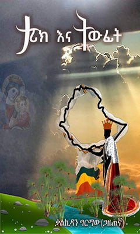
ታሪክ እና ትውፊት tarik ena tewfit ቃልኪዳን ግርማው · 2011 -
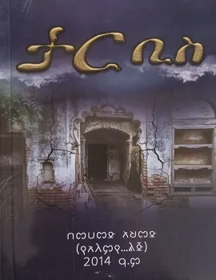
ታርቢስ tarbis መሀመድ አህመድ · 2014 -
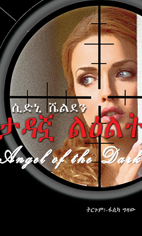
ታዳኟ ልዕልት tadanywa leelet ዩኒቲ መፅሐፍ መደብር ፋሲካ · 2016 -
ቴዎድሮስቴዎድሮስ Tewodros Tsegaye Gabre-Medhin · 1958
-
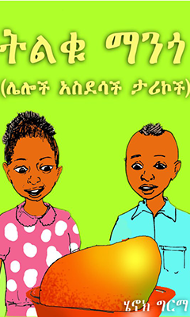
ትልቁ ማንጐ telqu mangwe ሄኖክ ግርማ · 2010 -
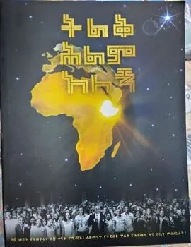
ትልቅ ህልም አለኝ teleq helem aleny ዳዊት ድሪምስ · 2012 -
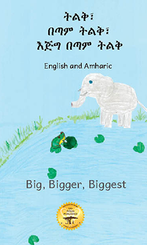
ትልቅ በጣም ትልቅ እጅግ በጣም ትልቅ teleq betam teleq ejeg betam teleq Ready Set Go Books -
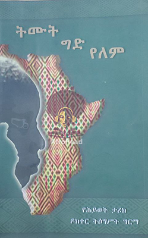
ትሙት ግድየለም temut gedyelem Dr Tigist Girma · 2012 - ትምህርተ ተዋህዶ temeherte tewahdo አበበ ጋሻዬ · 2013
- ትርኳሽ Tirkuash Seid Muhye Ahmed · 2025
- ትርጓሜ ቅኔ ፈለገ ሕይወት tergwame qene felege heywet አለቃ ኤልያስ ነቢ? ቀሲስ ከፍያለው መ?
- ትናንት እመጣለሁ Tenant Emetalehu Natnael Kerealem · 2024
- ትንሳኤ ዘ ኢትዮጵያ tensae ze ityopya በረከት ስሞን
- ትንሹ ቢትኮይን መጽሐፍ tenshu bitkoyen metshef BITCOINBIRR For Ethiopia · 2021
- ትንሿ ቤተክርስቲያን - ኦርቶዶክሳዊ ጋብቻ ቤተሰብና የህጻናት አስተዳደግ tenshwa betekerestiyan - ortodoksawi gabcha betesebna yehtsanat astedadeg ገብረኢግዚአብሔር ኪደ · 2013
- ትንቢተ ሽህ ሑሴን ጅብሪል tenbite sheh husen jebril ቦጋለ ተፈሪ · 2013
- ትንግርት tenegeret ዘሪሁን ገመቹ · 2015
-
ትኩሳትትኩሳት Tikusat ስብሀት ገብረእግዚአብሄር · 1997
- ትኩስ ቡና እንወዳለን tekus buna enwedalen Ready Set Go Books
- ትዝታን ሳስታምም teztan sastamem ገነት ወንድሙ (ሴሌ) · 2015
- ቶኔቶር tonetor ቤካ ሙሉነህ · 2015
- ቶፕ አዲሱ ሒሳብ አጋዥ መጽሐፍ top adisu hisab agazh metshef አበራ ተመስገን
-
ቶፕ የአማርኛ ትምህርት አጋዥ ከ5ኛ - 8ኛቶፕ የአማርኛ ትምህርት አጋዥ ከ5ኛ - 8ኛ top yeamarnya temeheret agazh ke5nya - 8nya ሐመልማል አለሙ
- ኑ! እንሟገት translated Yeshitela Yigezu · 2025